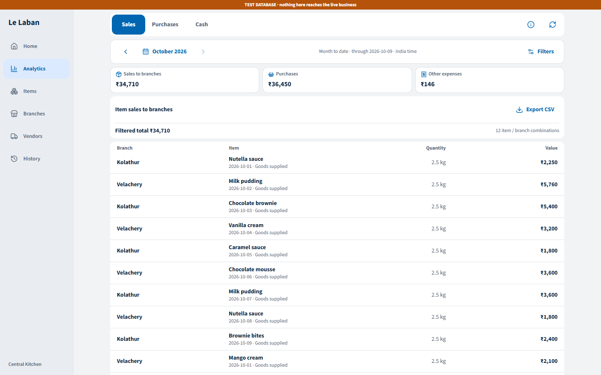
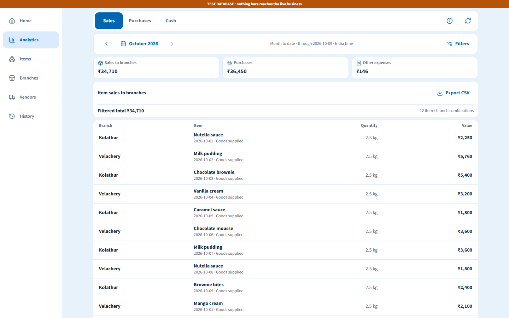

Unable to load this capture. Reload the local preview.

Unable to load the current-design capture. Reload the local preview.
Three background treatments on the actual frontend. Compare Home and Analytics at desktop and phone sizes before choosing the direction.
Neutral workspace · Desktop · AnalyticsA soft gray canvas separates crisp white reports from quieter navigation. Quiet separators keep the ledger easy to scan.
1440 × 900 browser viewport
Playwright captures with illustrative local data. Use the controls above; the app controls inside the images are not interactive.

Unable to load this capture. Reload the local preview.

Unable to load the current-design capture. Reload the local preview.